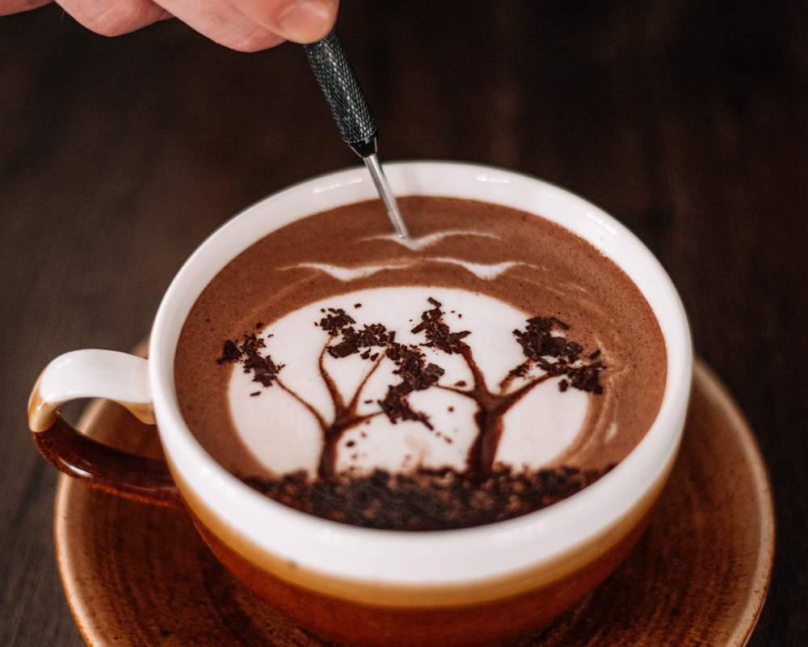

Кофемани набагато рідше відвідують стоматолога. Елементи, що містяться в цьому напої, не дають бактеріям осідати на зубній емалі.
Якщо ви щодня будете випивати 4 чашечки кави в день, це зможе мінімізувати ризик виникнення каменів у жовчному міхурі і цирозу печінки.

Перша кав’ярня в Парижі відкрилася в 1689 році і називалася Procope. Власником її був торговець лимонадом Франсуа Прокоп (Francois Procope). Перебувала вона навпроти театру, і основними її відвідувачами були представники богеми – артисти і художники.
